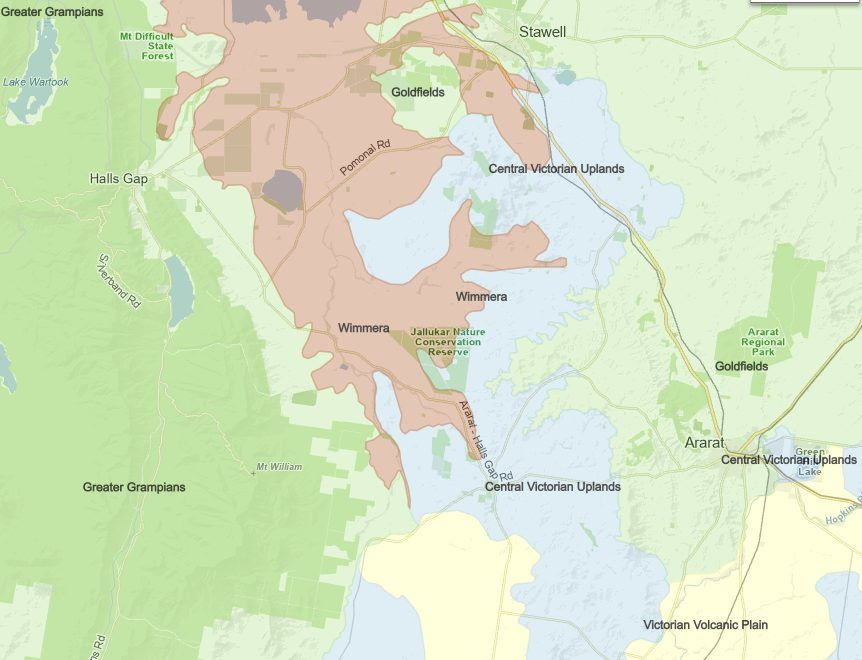
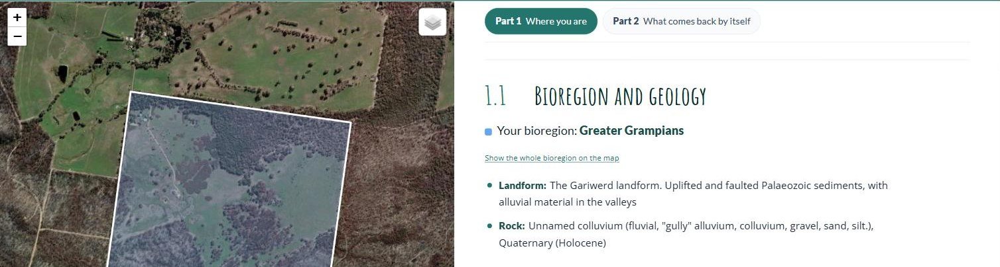
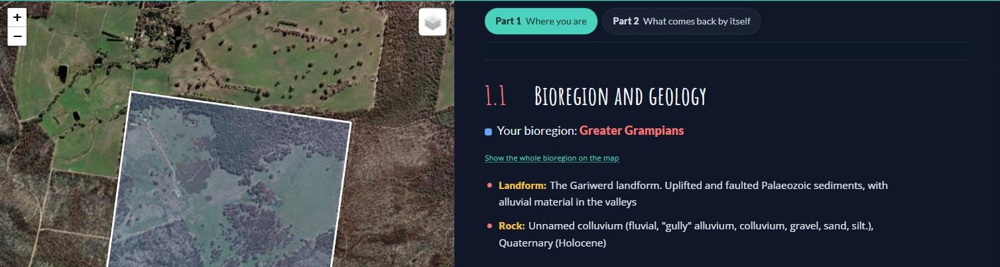

Bioregions and geology
To get to know your block, there are a few things you can look up that tell you what sort of habitat it has, and how that habitat responds to fire.
Fire ecology is shaped by vegetation type, which is shaped by climate and by soil, which in turn is shaped by geology. So the first step is to find your overall climate, soil and geology type: your bioregion.
What is a bioregion?
A bioregion is a big stretch of country that has broadly similar landforms, rocks, soils and climate, so it grows a recognisable mix of plants and supports a recognisable mix of animals.
Victoria is divided into 28 bioregions. They are drawn at a landscape scale, tens to hundreds of kilometres across, so your bioregion tells you what kind of country you are in, not exactly what grows on your block. That finer detail is your vegetation type (section 1.2). The bioregion is the big picture it sits inside.
This guide covers five bioregions: the four that cover the fire-affected country of the Wimmera and Grampians,1 and the Lowan Mallee of the Little Desert.2

The four bioregions across the Wimmera and Grampians, with the fire-affected country marked, so a reader can find roughly where they sit before reading the table.
Source: the Victorian Bioregions layer in NatureKit. Needs a simple redrawn version rather than a screenshot — check what the basemap licensing allows.
| Bioregion | Landform and geology | Vegetation you’d expect | What it means for fire |
|---|---|---|---|
| Greater Grampians | The Gariwerd landform. Uplifted and faulted Palaeozoic sediments, with alluvial material in the valleys. | Shrubby Woodland, Heathy Woodland, Damp Sands Herb-rich Woodland, Heathy Dry Forest. | Mostly sandy, infertile, well-drained soils that grow heathy vegetation: flammable most of the year, burns hot, and depends on fire to regenerate.3 |
| Wimmera | Plains and low hills on sedimentary country. Quaternary sediments dominate here. | Plains Grassy Woodland, Red Gum Swamp. | Grassy woodland on the plains carries lighter, faster fires. Red gum swamps rarely carry fire and can act as a firebreak for what adjoins them. |
| Victorian Volcanic Plain | Newer volcanics — basalt plains, craters and lakes. | Plains Grassy Woodland, Plains Grassland, Creekline Grassy Woodland. | Basalt plains grow grassland, which carries fast, light fires and needs them fairly often to stay diverse. |
| Central Victorian Uplands | Dissected uplands on Lower Palaeozoic deposits, among granitic and sedimentary country. | Alluvial Terraces Herb-rich Woodland, Grassy Woodland, Grassy Dry Forest. | Grassy dry forest on the slopes recovers quickly after fire and much of it is fire-cued. Herb-rich woodland on the river terraces rarely carries fire. |
| Lowan Mallee | An undulating plain of deep, pale siliceous sands (the Lowan Sands): old consolidated dunes, with low ridges of red, lateritised sandstone.2 | Heathy Woodland, Lowan Sands Mallee, Heathy Mallee, Dunefield Heathland, Tea-tree Scrub. | Deep, infertile sands growing heath and mallee: flammable, prone to large fires, and many of its plants depend on fire to regenerate. |
Now use the lookup tool to find out your own bioregion.
In the Wimmera Bushfire Ecology Lookup Tool, section 1.1, Bioregion and geology, names your bioregion. If your block crosses two bioregions you get a card for each; click one to highlight its part of the block. Show the whole bioregion on the map zooms out to all of it.


The example block sits in the Greater Grampians bioregion: uplifted, faulted sedimentary country on the edge of the ranges. The whole block is on colluvium: gravel, sand and silt washed down the gullies from the ranges in recent geological time. Sandy, well-drained ground like that grows heathy vegetation, which is flammable most of the year, burns hot, and depends on fire to regenerate.
Because bioregions are mapped at a very large landscape scale, on their own they don’t say a great deal about how your block responds to fire. For that we need its vegetation types. But we start with the bioregion because it tells us which vegetation types we might find. So now let’s step down into your bioregion’s vegetation types, in the next section.
The Lowan Mallee row is new, drafted from VicFlora and DEECA’s Lowan Mallee EVC list, and the lookup tool now uses the same text. The new What it means for fire column folds in the old bullet points (Greater Grampians and Victorian Volcanic Plain) and adds lines for the Wimmera, Central Victorian Uplands and Lowan Mallee that are drawn from the fire divisions in 1.4 rather than a published source. All of it needs a check by Yasmin Kelsall or Huib.
Parts 1 and 2 now follow the demonstration block the lookup tool opens on (the property in the Long Gully photo sequence in 2.1). Get the landholder’s agreement before publishing: the screenshots show the boundary on aerial imagery, so the property will be recognisable.